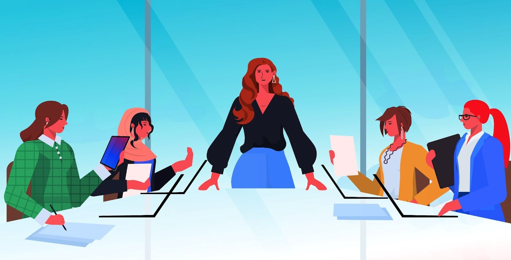

#OPENTOWORK
University of Mary Washington
Jane Doe
Computer Science Student at the University of Mary Washington
Washington, DC
Contact
45 connections
in
Top Voice
Open to
Add Section
. . .
University of Mary Washington
Jane Doe
in
Top Voice
About
Top skills
Communication
Leadership
Teamwork
Critical Thinking
Java
Pandas
Activity
Jane Doe
So excited to announce that my company is moving forward with an amazing product! Credit: JohnDoe14

Jane Doe
Always grateful for advice on handling client calls! Thank you Chris!
Jane Doe
Celebrating one year at my company!
Profile Language
English
Public Profile & URL
www.linkedin.com/in/jane27
You might like
Communicate with Clarity

Lead with Confidence